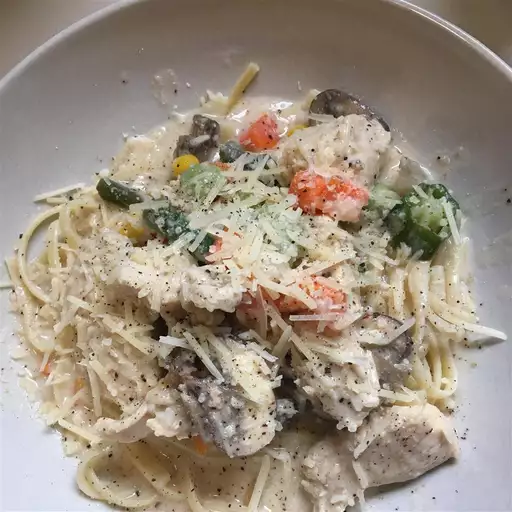

Chicken Alfredo

This is going to contain the recipe for chicken alfredo, Chicken Alfredo is a very popular dish made with pasta and many accessible/affordable ingredients
ingredients required:
- One pound uncooked pasta
- Two boneless chicken breast halves, cooked and cubed
- One 16 oz jar Alfredo Sauce
- One 10 oz packaged frozen mixed vegetables
- One 4.5 oz can sliced mushrooms
- 1/3 cup of milk
Steps to make:
- Fill a large pot with lightly salted water and bring to boil. Cook pasta at a boil until tender yet firm to the bite, about 8 minutes.
- While pasta is cooking, placed cubed cooked chicken, Alfredo sauce, frozen vegetables, mushrooms, and milk in a large saucepan over medium-low heat. Cook and stir until chicken is heated through and vegetables are tender.
- Serve warm Alfredo and chicken sauce over cooked noodles
Back to Home Page